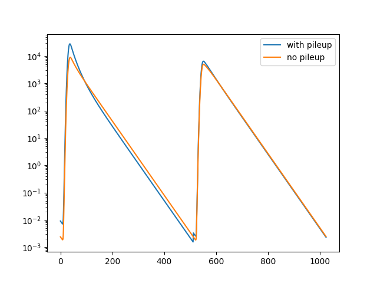

Note
Click here to download the full example code
Pile-up¶
This example illustrates the effect of pile up on the shape of fluorescence decay curves and demonstrates how the shape of a model function can be modified to account for pile up.

import pylab as p
import numpy as np
import scipy.stats
import fit2x
# Set seed to make results reproducible
np.random.seed(42)
# Define number of channels and excitation period
n_channels = 512
period = 32
time_axis = np.linspace(0, period, n_channels)
conv_stop = n_channels // 2
# compute a irf
irf_width = 0.25
irf_position = 2.0
dt = time_axis[1] - time_axis[0]
irf_p = scipy.stats.norm.pdf(time_axis, loc=irf_position, scale=irf_width)
irf_s = irf_p
"""
In this example first an ideal fluorescence decay is computed for the parallel (p)
and perpendicular (s) channel using fit23.
"""
# Compute model fo a single photon
n_photons = 1
period, g, l1, l2 = 32, 1.0, 0.1, 0.1
tau, gamma, r0, rho = 2.0, 0.01, 0.38, 1.2
model = np.zeros(n_channels * 2) # For parallel and perpendicualr
bg = np.zeros_like(model)
fit2x.modelf23(
np.array([tau, gamma, r0, rho]),
np.hstack([irf_p, irf_s]),
bg, dt,
np.array([period, g, l1, l2, conv_stop]),
model
)
"""
The number the model is scaled to a number of photons typically recorded in a eTCSPC
experiment. In an eTCSPC experiment usually 1e6 - 20e6 photons are recorded.
"""
n_photons = 5.5e5
model *= n_photons
# Add pileup to parallel (p) and perpendicular (s)
model_p = model[:len(model) // 2]
model_p_with_pileup = np.copy(model_p)
model_s = model[len(model) // 2:]
model_s_with_pileup = np.copy(model_s)
"""
The pile up depends on the instrument dead time, the repetition rate used to excite
the sample and the total number of registered photons. Here, to highlight the effect
of pile up an unrealistic combination of the measurement time and the number of photons
is used. In modern counting electronics the dead time is often around 100 nano
seconds.
In this example there is no data. Thus, the model without pile up is used as
"data". In a real experiment use the experimental histogram in the data argument.
"""
pile_up_parameter = {
'repetition_rate': 1./period * 1000, # Repetition rate is in MHz
'instrument_dead_time': 120., # Instrument dead time nano seconds
'measurement_time': 0.05, # Measurement time in seconds
'pile_up_model': "coates"
}
fit2x.add_pile_up_to_model(
model=model_p_with_pileup,
data=model_p,
**pile_up_parameter
)
fit2x.add_pile_up_to_model(
model=model_s_with_pileup,
data=model_s,
**pile_up_parameter
)
model_ps_pile_up = np.hstack([model_p_with_pileup, model_s_with_pileup])
p.semilogy(model_ps_pile_up, label='with pileup')
p.semilogy(model, label='no pileup')
p.legend()
p.show()
Total running time of the script: ( 0 minutes 0.276 seconds)